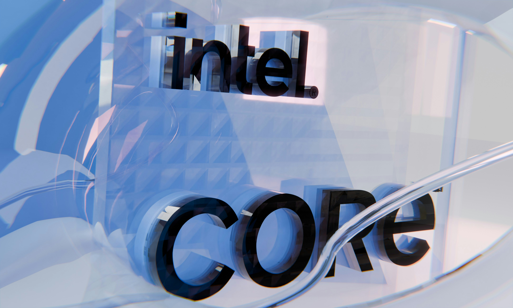
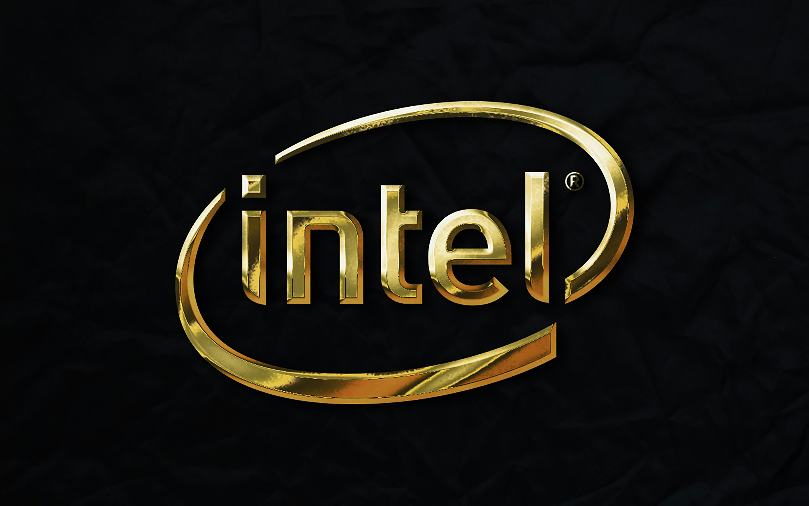
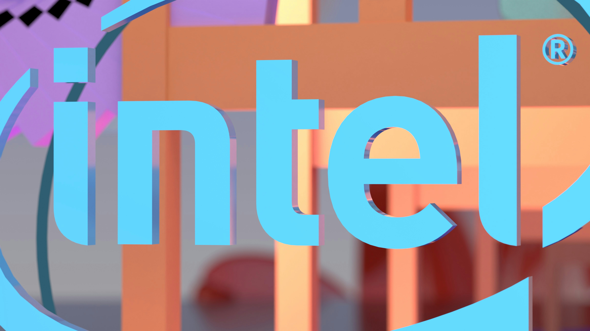
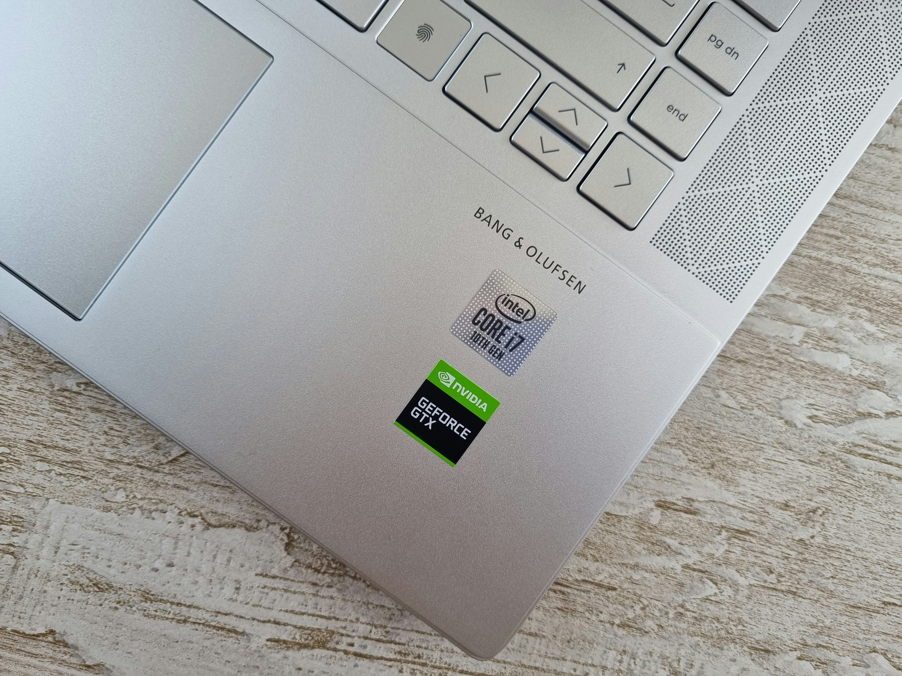
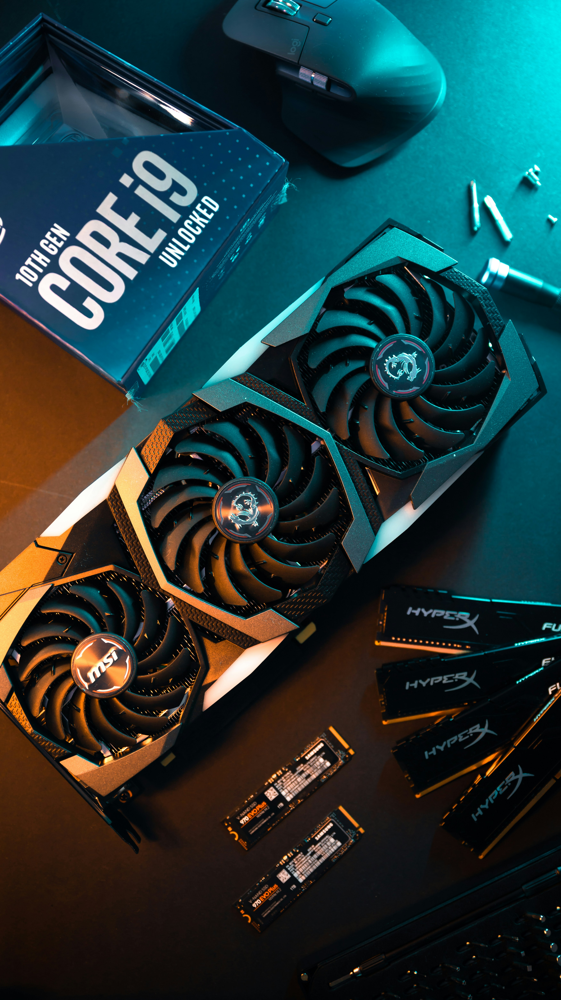

Key sustainability focus areas
Renewable Energy
Intel continues to expand clean power sources across its facilities, lowering carbon emissions while supporting high-performance manufacturing.
Water Conservation
Smart water stewardship helps Intel improve efficiency, reduce strain on local resources, and move toward more sustainable operations worldwide.
Zero Waste
Sustainable manufacturing practices help Intel reduce waste, reuse materials, and build a more circular supply chain for future innovation.
Intel timeline milestones
Scroll to view timeline | Hover over cards to learn more!
1968
Intel Founded

Robert Noyce and Gordon Moore rename the newly formed company NM Electronics to Intel Corporation, laying the foundation for decades of technological innovation.
This milestone marks Intel's beginning as a company focused on semiconductor innovation and long-term technology leadership.
1971
First Microprocessor

Intel debuts the 4004, the world's first commercial microprocessor, igniting the microprocessor revolution and propelling the future of computing devices.
The 4004 helped launch the era of integrated computing and set the stage for modern personal electronics and embedded systems.
1978
8086 Processor

Launch of the 8086 processor, establishing the x86 architecture that drives countless PCs and servers in the modern era.
The x86 architecture became a standard foundation for personal computing, helping Intel shape the future of software and hardware.
1985
386 Processor

Intel introduces the 386 processor with 32-bit architecture, ushering in a new era of performance and multitasking for personal computers.
This generation pushed computing power further, enabling richer applications, multitasking, and more advanced business systems.
2006
Peak GHG Emissions

This year marks Intel's highest annual greenhouse gas emissions for operations. Over subsequent years, Intel invests heavily in chemical abatement, renewable energy, and energy-efficient manufacturing to reverse this trend.
The company later used cleaner manufacturing processes and cleaner energy strategies to reduce emissions and improve operational impact.
2020
RISE Strategy

Intel launches its RISE (Responsible, Inclusive, Sustainable, Enabling) strategy and 2030 goals, aiming to drive industry-wide progress on climate action, water stewardship, and waste reduction.
RISE connects sustainability with inclusion and innovation, outlining a broader vision for responsible growth across operations and supply chains.
2022
Net-Zero By 2040

Intel announces its commitment to achieve net-zero greenhouse gas emissions (Scope 1 and 2) across its global operations by 2040, building on years of environmental initiatives.
This target reflects Intel's long-term focus on reducing emissions, improving energy efficiency, and building a greener manufacturing footprint.
2023
Renewable Electricity

The company achieves 99% renewable electricity usage worldwide, helping to drastically lower carbon emissions and driving progress toward Intel's long-term sustainability goals.
Renewable electricity use is a major step toward cleaner operations, reducing the environmental footprint of semiconductor manufacturing.
2024
Sustainability Summit

Intel hosts its first Sustainability Summit, uniting suppliers, government officials, and industry leaders to collaborate on next-generation sustainable semiconductor manufacturing.
The summit brought together partners to share ideas, advance climate goals, and support innovation with a stronger sustainability focus.